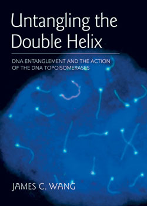

News Archives : 2009 : Emeritus MCB Professor “Untangles” the Double Helix in New Book
May 4, 2009
View from the Wangs' backyard; Mt. Rainier
Forty-one years ago, Jim Wang discovered the first of a family of enzymes crucial to the disentanglement of DNA strands or double helices during various cellular processes involving DNA, including replication, transcription, and repair. He coined the term “DNA topoisomerases” to describe the enzymes, and has been a leader in the field ever since.
Now, the emeritus Mallinckrodt Professor of Biochemistry and Molecular Biology, who retired from MCB and Harvard in 2005, has written Untangling the Double Helix: DNA Entanglement and the Action of the DNA Topoisomerases (Cold Spring Harbor Laboratory Press, 2009).
Wang said that his primary motive in writing the book was that “despite the gradual recognition of the significance of the DNA entanglement problem in nearly all cellular transactions of DNA, and the finding that many antimicrobial and anticancer therapeutics target the DNA topoisomerases, few articles have been written for the general readership, and many outside the field still consider the different manifestations of the DNA entanglement problem and the DNA topoisomerases exotic topics for the specialists.”
Furthermore, Wang has a unique perspective on the field, having been present at its birth.
“It seemed to be a reasonable thing [for me] to do,” Wang said. “Since I was the only one who had witnessed the developments of the field since its very beginning on a summer day in 1968.”
While his book is not exactly a popular account, Wang has aimed to make the work accessible to lay readers with an interest in the field. He writes in the Preface: “I also tried to present the subject in a way that avoids, as much as possible, prior knowledge in chemistry, physics, or mathematics, while not oversimplifying the subject.”
Wang spent 28 years at MCB, and prior to that, more than a decade in the Chemistry department at the University of California-Berkeley.
“Jim provided the intellectual foundation for an entire area of science,” said Nancy Kleckner, the Herschel Smith Profess of Molecular Biology, and a long-time colleague of Wang’s. “As his departmental colleagues, we had the privilege of living at ‘ground zero‘. We watched his ideas and his work as they emerged, and we always knew that the definitive answer to any complex question about the physical chemistry of DNA required only going downstairs to chat. More subtly, his ways of thinking permeated not only the research of his colleagues but the teaching of the Department, which continues to bear the strong stamp of DNA topology as a central focus. This book brings back many memories of Jim. It also makes us remember how much we miss him.”
Wang now lives with his wife in Bellevue, Washington, near Seattle. Asked what he has been doing besides writing, he laughed, “Sometimes I wish that I could take some time off retirement, so as to be less busy. Besides, with high speed Internet and the entire Harvard electronic subscription a few keyboard strokes away, I can do almost everything I used to do in my Fairchild office.”
Jim Wang's autobiography will be published in this year's Annual Review of Biochemistry; Vol. 78 (Volume publication date July 2009)
JBC Centennial 1905–2005: 100 Years of Biochemistry and Molecular Biology Unwinding the DNA Topoisomerase Story: the Work of James C. Wang; J. Biol. Chem., Vol. 282, Issue 22, 17, June 1, 2007

Jim Wang dedicated the book to his daughters Janice and Jessica.
Untangling the Double Helix: DNA Entanglement and the Action of the DNA Topoisomerases (Cold Spring Harbor Laboratory Press, 2009)